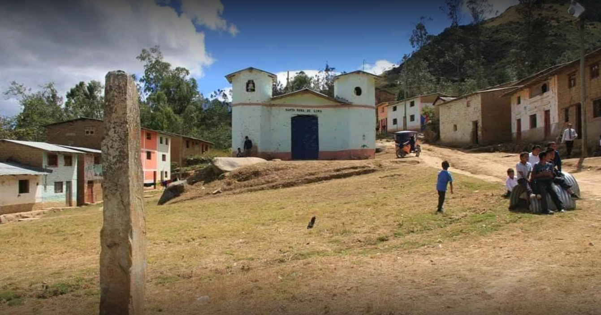

MUNICIPALIDAD DEL CENTRO POBLADO DE JANQUE
Un poco de su historia
Janque, actualmente uno de los Centros Poblados más grande del distrito; se encuentra ubicado al margen derecho de Incahuasi, colindante con el distrito de Miracosta (Chota) región Cajamarca
.Significado de Janque
Existen varias versiones, entre ellas destacamos que:
1º La derivación del vocablo Quechua “Imanu Kanqui” que significa “Como estas” (Saludo entre dos o mas personas)
2 Por reseña histórica los hacendados, llevaban a Ferreñafe, jóvenes trabajadores y honrados, cuando retornaban estos llegaban vistiendo diferente, sobre todo en el calzado, pues traían “Llanques”, calzado cuyo material era de jebe, muy novedosos para la época, usualmente eran de cuero de gando vacuno. Es así que empiezan a ser conocidos como los llanqueños, al transcurrir los años esta denominación sufre variaciones onomatopéyicas, siendo reemplazada por el vocablo Janqueños.
Este Centro Poblado se halla situado a una altura de 2 300 m,s,n,m, caracterizado por un relieve abrupto, con declives pronunciados, suelos rocosos, carente de vegetación y con un clima estacionario.
Su población lo constituye la etnia quechua Lambayecana, heredera de la cultura del antiguo Perú, denotando aun el habla quechua y costumbres autóctonas. La zona de Incahuasi deriva de los Penachis, cuyo Cacique Cashay Poma, dominaba la cuenca alta del rio la Leche, este a su vez exigía como intercambio productos propios de la parte baja, como el algodón, ají (Batangrande) y sal (Morropón)
Existen testimonios que datan de tiempos remotos, como los “Petroglifos” y esculturas en piedra, demostrando así sus inicios del asentamiento humano.
Janque fue escenario de haciendas, y por consiguiente influenciada por una cultura paternalista.
Contenido tomado de www.regionlambayeque.gob.pe